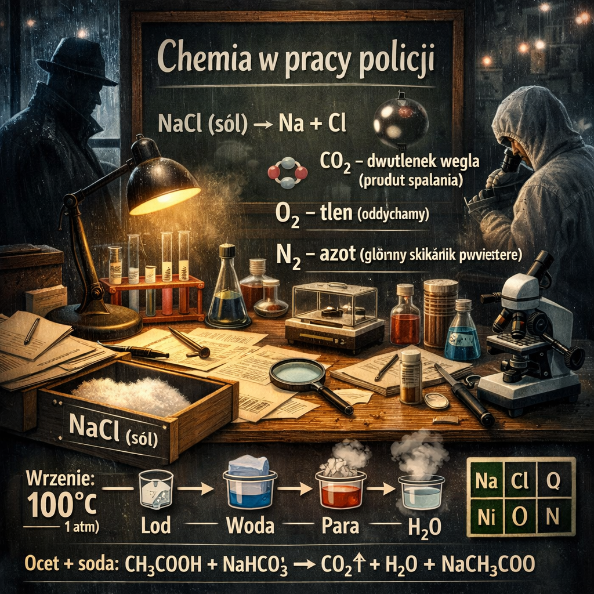

Lekarze policyjni i technicy kryminalistyczni codziennie korzystają z chemii — badają ślady, substancje i próbki.
Odpowiedz na 10 pytań z chemii na poziomie szkoły podstawowej.
🎧 Posłuchaj nagrania:
Widzę, że nie jesteś w pełni zaangażowany w proces :)